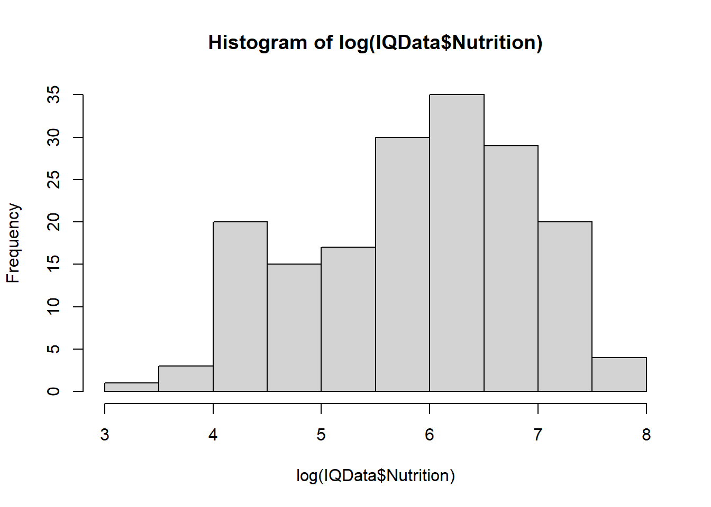

Call:
lm(formula = IQ ~ log(Disease) + log(Nutrition), data = IQData)
Residuals:
Min 1Q Median 3Q Max
-21.0732 -4.1154 -0.1215 3.9238 24.0464
Coefficients:
Estimate Std. Error t value Pr(>|t|)
(Intercept) 128.6854 3.0463 42.244 <2e-16 ***
log(Disease) -6.3655 0.6525 -9.755 <2e-16 ***
log(Nutrition) 0.6057 1.0594 0.572 0.568
---
Signif. codes: 0 '***' 0.001 '**' 0.01 '*' 0.05 '.' 0.1 ' ' 1
Residual standard error: 6.544 on 171 degrees of freedom
Multiple R-squared: 0.6915, Adjusted R-squared: 0.6879
F-statistic: 191.6 on 2 and 171 DF, p-value: < 2.2e-16
Why disease and nutrition is logged
During data exploration, plots reveal Disease and Nutrition to be skewed:
hist(IQData$Disease)
hist(IQData$Nutrition)
Taking the log of the data makes it more normally distributed:
hist(log(IQData$Disease))
hist(log(IQData$Nutrition))

This may improve the fit of the model.
Challenge
Identify the parts of the summary output that tell you what the effect of Disease and Nutrition is on IQ.
Answer
You could look at the p values under Pr(>|t|). For log(Disease) it is <2e-16 suggesting significance. For log(Nutrition) it is 0.568 suggesting non significance. You may also look at the Estimate and Adjusted R-squared.
So we conclude IQ is predicted by disease but not nutrition! Or is it…? Since this dataset is spatial it is likely to have the problem of autocorrelation!
Assessing Autocorrelation
Spatial autocorrelation can be measured using Moran’s I (I the letter not 1 the number).
Correlograms
We can use the function spline.correlog() in the package ncf to create a correlogram. This helps us decide if we have autocorrelation.
Install and library load the ncf package.
install.packages("ncf")
library(ncf)
Make an object called correlog_object containing information to plot a correlogram.
IQData$Longitude and IQData$Latitude are the numbers the function used to calculate distances between countries
residuals(model1) is a list of the residuals from the lm model. This represents the data.
resamp=0 tells R to do the calculation once. Try increasing this number (for example, resamp = 100) and plotting to see a confidence interval.
latlon=TRUE tells R the co-ordinates are latitude and longitude.
plot(correlog_object) passes the newly created object through the plot() function to make a correlogram graph.
Interpreting the correlogram
On the x axis, are the distances between countries (calculated from latitude and longitude). Moran’s I values are on the y axis labelled Correlation. There are high values (positive ad negative) if the data is very similar, low values closer to 0 if it is not.
there is no spatial autocorrelation if the values of Moran’s I varies no matter what the distance
there is spatial autocorrelation if Moran’s I values are higher for countries closer together (i.e. lower distance apart).
We possibly have spatial autocorrelation! (Moran’s I values are high on the left of the graph.)
Adding the error to the graph (by doing iterations with resamp=10) helps us determine where Moran’s I values really do differ from 0.
1 of 10
2 of 10
3 of 10
4 of 10
5 of 10
6 of 10
7 of 10
8 of 10
9 of 10
10 of 10
plot(correlog_object)
The error on the left of the graph which represents countries close together still suggests correlation.
moran.test
In addition we can establish if there is autocorrelation by running the moran.test() in package spdep. It gives us a p value that suggests if the data is randomly dispersed.
Load the package
library(spdep)
First we must create a matrix of distances and weight them:
IQData[9:10] specifies columns 9 and 10 where the longitude and latitude values are.
0, 10000 specify the lower and upper bounds of the distance class of interest (1 – 10000km is nearly global)
IQlistw is an object we create ready to pass through the moran.test()
nb2listw is a function that turns our neighbourhood IQnb object into a weighted list
Now perform the moran test:
result <-moran.test(residuals(model1), listw=IQlistw) result
Moran I test under randomisation
data: residuals(model1)
weights: IQlistw
Moran I statistic standard deviate = 11.706, p-value < 2.2e-16
alternative hypothesis: greater
sample estimates:
Moran I statistic Expectation Variance
6.690929e-02 -5.780347e-03 3.855867e-05
The p value suggests there is a difference in the Moran I’s values as the distances change. We use this result along with the correlogram to decide that there is autocorrelation in this case.
Mapping the Data
Maps may help us understand why data is autocorrelated.
Challenge
Install and library load the package ggplot2 and ggmap containing the world dataset which is the coordinates of a simple world map. Then pass the world dataset through the map_data function and assign it as an object that you call world.
aes(Longitude, Latitude, the position of the residuals. Here given as longitude and latititude.
color = tells what colours to make the points. Here positive and negative residuals are blue and red respectively. Uses the ifelse function.
size= tells R how big to make the circles. Here we use the proportional size of the residuals relative to the the biggest (max) residual.
The large blue circles on the map are where the countries are most similar. There is also negative correlation where the big red circles are.
Another way to visualise why there is a autocorrelation problem, is to plot IQ and disease according to the continent of the country (similar to Figure 1 from Hassall and Sherratt, 2011):
ggplot(IQData, aes(x=log(Disease), y=IQ, group = Continent)) +geom_point(aes(shape=Continent))
You can see the data clusters by continent.
Models for Spatial Data
Having established that we need to account for the spatial autocorrelation, we can run a model. However, there are many models to choose from.
As an example, we will use a GLS (Generalized Least Squares) model to show how spatial data is included in the model code to account for spatial autocorrelation.
GLS models
The function gls() in the nlme package will run a GLS model.
library(nlme)
gls() uses similar code to lm but the argument correlation= allows the latitude and longitude data to be included. R will automatically create a spatial correlation structure to include in the model using the longitude and latitude values.
In the correlation argument we have specified the spatial structure of our data to be corExp in the correlation= argument. However, there are many options with corExp, corGaus, corLin, corRatio, and corSpher most commonly used for spatial autocorrelation.
Evaluating models with AICs
One way we could choose which spatial structure option to use, is to run many models with the different options and evaluate the fit of the models. We can evaluate them using an AIC value (this can be used on all sorts of models not just gls models).
Run the models with the different structures corExp, corGaus, corLin, corRatio, and corSpher:
model_corExp has the lowest AIC value so it fits the data best.
Challenge
View the output of the model by passing it through summary().
Challenge
Compare the results of this model where spatial autocorrelation is accounted for with the original lm model1 where it was not. What are the differences?
Answer
summary(model1)
Only Disease was significant in the lm model. Now we conclude DiseaseandNutrition is significant when autocorrelation is accounted for in the model.
Cleaning seabirds
Challenge
It is useful to learn how to download datasets from various sources. Try downloading the seabird data from Kaggle
If you get stuck you can use this source but it only has a subset of the data - seabird dataset
This data is quite large. In this case you might find it easier to make a data frame only containing the variables you need lat, lon, species, max_depth.m.
The data also needs cleaning. Practice renaming the variable max_depth.m to maxDepth.
Now run an analysis to understand if the data is spatially autocorrelated.
Then decide if you need to control for spatial autocorrelation when you test the effect of the species on the maxDepth dived.
References
Hassall C, Sherratt TN (2011) Statistical inference and spatial patterns in correlates of IQ. Intelligence, 39, 303-310.